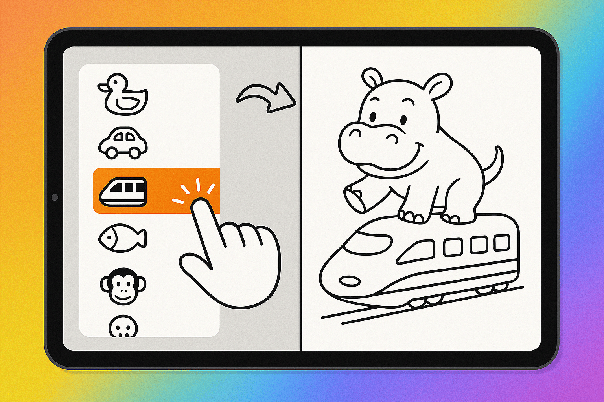

2025年10月、お祭りに出展したブースでAIぬりえを体験している様子です。塗ったぬりえが動くシーンも登場しますが、こちらはまだ開発中の新機能。
AIぬりえの楽しみ方


これまでのぬりえは、原画を大人が描くものでした。これからは、こどもたちが自分が描きたい絵を描けるようになります。 「宇宙を冒険するネコ」「虹の上を走るユニコーン」など自由な発想を、美しい線画イラストに変換します。 作ったぬりえはプリンターで印刷して楽しめます。

先端のIT技術を発表する｢未踏会議｣（情報処理推進機構主催）のブースイベントで、来場のお子さまたちに描いてもらった原画です。 ｢きょうりゅうとしんかんせん｣など、思いがけない発想の絵で大盛りあがりでした。

メディアで紹介されました
たくさんの反響をいただきました
★★★★★
こどもの想像力が爆発！そして、こどもがAIに興味を持つきっかけになるアプリ。大人の私もつい一緒に遊んでしまいました。
★★★★★
こどものマイブームや願望を存分に満してあげられる、良いアプリだと思います。
★★★★★
小さなこどもが何を描きたいのか、これまでは大人が想像するしかなかったのですが、こどもでも扱える設計になっていて、自分が好きなものを描くことができます。
★★★★★
原画から自分好みにカスタマイズできるのが良い！
お知らせ
FAQ（よくあるご質問）
Q1: 「生成AIによる塗り絵」はどのような仕組みですか？
入力したキーワードや文化背景、対象年齢等から画像生成向けの情景描写文をGPT-4oで作成し、それを画像生成AIモデル（OpenAI DALL·E 3, Google Imagen 3）へ入力して線画画像として出力する仕組みです。画像生成AIモデルは得意領域によって使い分けられています。
Q2: こどもが使っても安全ですか？不適切・危険な画像の生成は防げますか？
はい、安全性は最重視しています。キーワード入力段階で独自のエージェントAIが不適切ワードや権利侵害表現をフィルタリングし、画像生成AI自体にもコンテンツフィルター機能があります。
Q3: 将来的に有料になりますか？
現在はリリース記念で全機能が無料・無制限でご利用いただけます。将来的には、塗り絵の「生成」機能についてサブスクリプション（定額課金）モデルを導入する予定です。ただし、「みつける」タブでの塗り絵利用や、過去に生成され誰もコレクションしていない塗り絵の再利用などは無料で提供し、無料ユーザーでも十分楽しめるアプリを目指します。
Q4: 生成された塗り絵の著作権はどうなりますか？学校で使っても良いですか？
生成された塗り絵の著作権は株式会社ズカンドットコムに帰属します。個人や家庭内で楽しむ範囲でのご利用は自由です。学校の授業など、教育目的での利用（複製・配布含む）は著作権法第35条に基づき許諾なくご利用いただけます。商業利用や法人利用については別途お問い合わせください。詳細については 利用規約をご確認ください。
Q5: アプリ内で直接色を塗ることはできますか？
本アプリ内に塗り絵機能はありません。紙に印刷してお楽しみください。お持ちのお絵描きアプリ等に画像を転送してデジタルで色塗りをお楽しみいただくこともできます。
Q6: 塗ったぬりえを動画にする機能はありますか？
ただいま動画化機能は鋭意開発中です。イベントなどで先行して試していただいています。